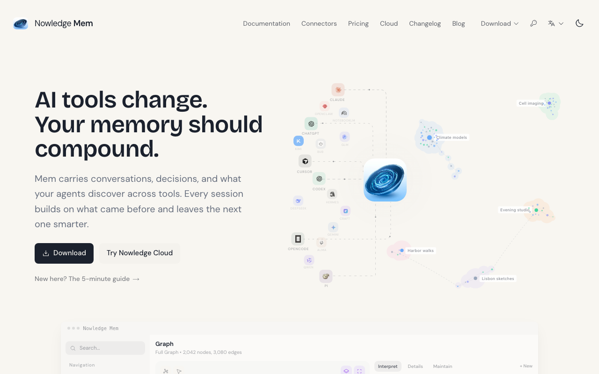
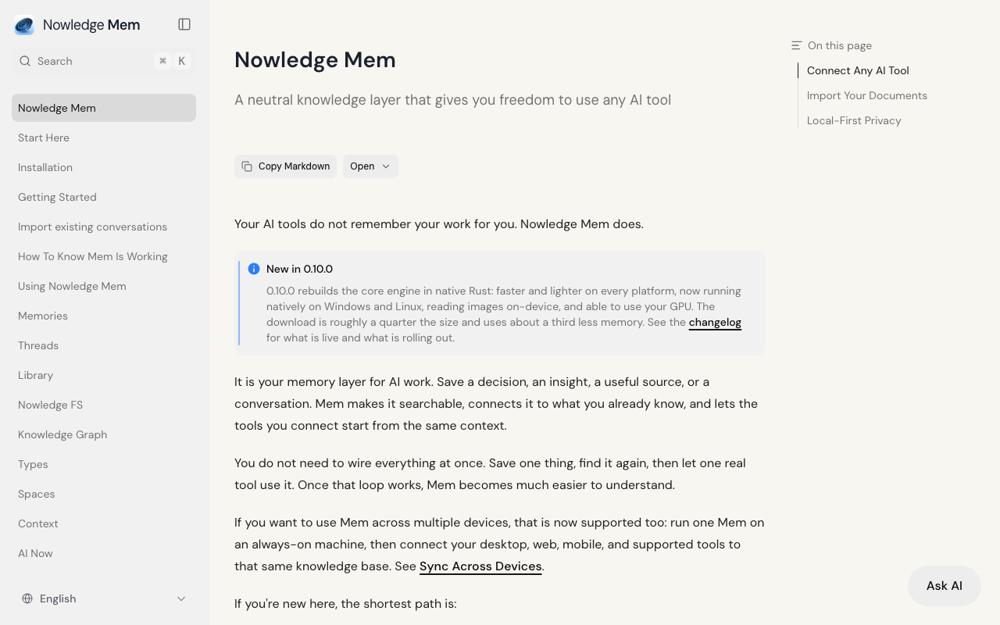
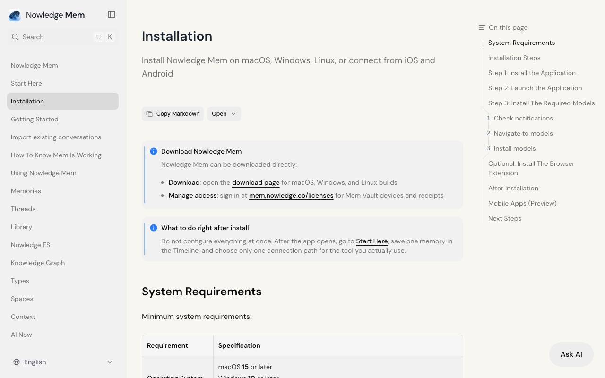
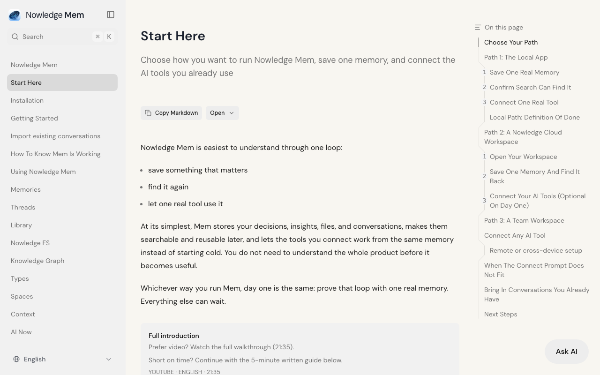
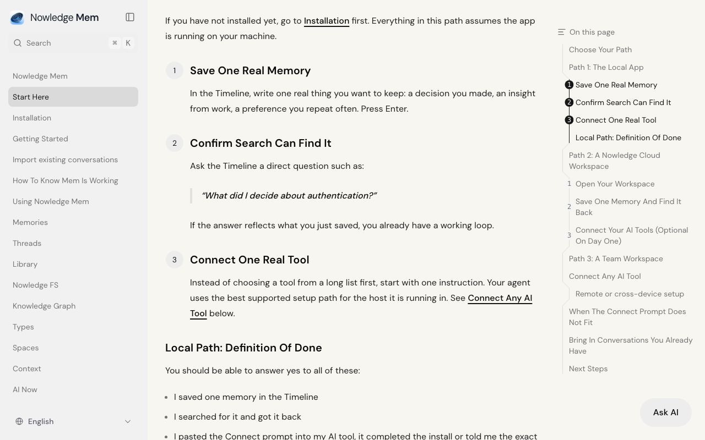
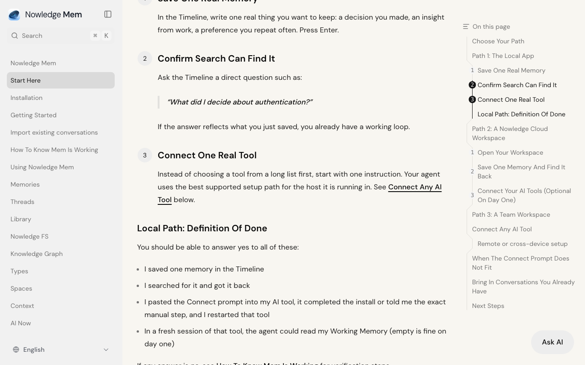
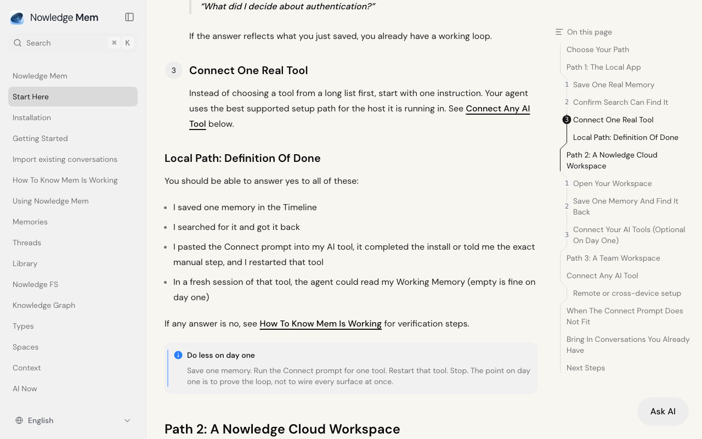
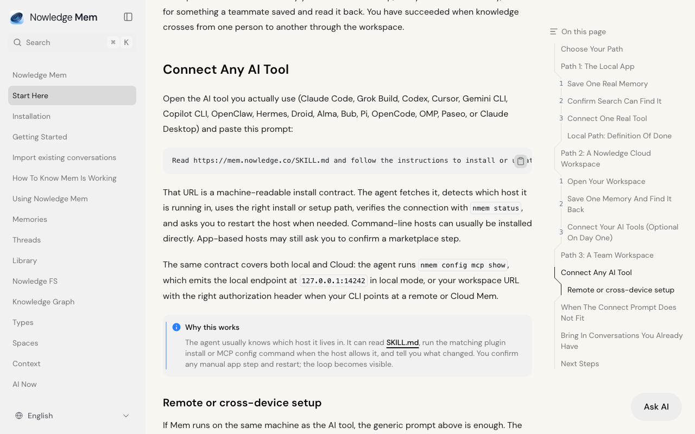
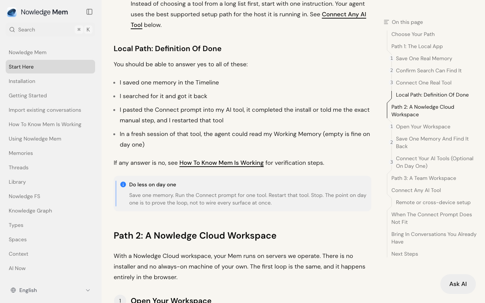
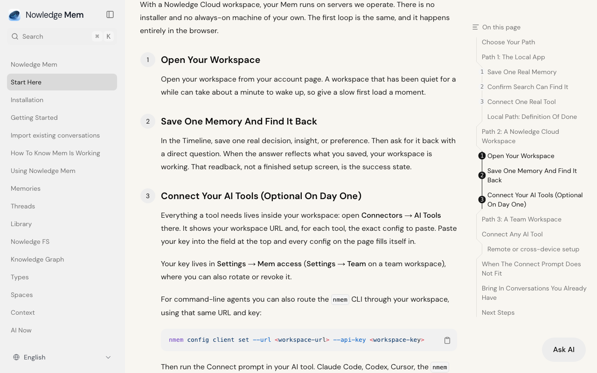

Think aloud: Memory for AI agents that carries context across tools - okay, that's the pitch. Let me check the docs before anything else, I want the actual mechanics not just marketing copy.
URL/context: https://mem.nowledge.co/

Think aloud: a memory layer that connects to any AI tool via a copy-paste prompt, not locked to one vendor. That's actually different from stuff like Mem0 or ChatGPT memory which are tool-specific. Let me check the actual installation steps now.
URL/context: https://mem.nowledge.co/docs

Think aloud: Sixteen gigs of RAM and ten gigs disk just for a memory layer app feels heavy, but okay. Let me check Start Here since the docs say that's literally the first thing you do after install.
URL/context: https://mem.nowledge.co/docs/installation

Think aloud: Three paths - local, cloud, team. Let me see exactly what 'save one memory' step looks like before I decide if this is really different from other memory tools.
URL/context: https://mem.nowledge.co/docs/start-here

Think aloud: Step one's just typing a memory into a timeline and hitting enter — simple enough. Let's see what the search confirmation step actually looks like.
URL/context: https://mem.nowledge.co/docs/start-here#save-one-real-memory-step

Think aloud: Save-search-connect is the loop. Let me scroll down and actually read the connect-a-tool step — that's the real differentiator for me.
URL/context: https://mem.nowledge.co/docs/start-here#confirm-search-can-find-it-step

Think aloud: Connect Any AI Tool — that's the actual mechanism I care about. Let's see what it says.
URL/context: https://mem.nowledge.co/docs/start-here#connect-one-real-tool-step

Think aloud: The SKILL.md prompt is clever — one URL an agent reads and self-configures the install. That's actually a real differentiator versus manually wiring an MCP server myself.
URL/context: https://mem.nowledge.co/docs/start-here#connect-any-ai-tool

Think aloud: Rather than typing addresses, I want to get there through the menus, tabs, and links on the page — I should look around, and scroll if needed.
URL/context: https://mem.nowledge.co/docs/start-here#local-path-definition-of-done

Think aloud: Rather than typing addresses, I want to get there through the menus, tabs, and links on the page — I should look around, and scroll if needed.
URL/context: https://mem.nowledge.co/docs/start-here#local-path-definition-of-done

Think aloud: The cloud path probably needs an account to open a workspace — let's see how far I get before it asks me to sign up.
URL/context: https://mem.nowledge.co/docs/start-here#local-path-definition-of-done

Think aloud: Opening a workspace probably means logging into an account page — that's my stop point since this is a cloud path needing signup.
URL/context: https://mem.nowledge.co/docs/start-here#open-your-workspace-step

Think aloud: 'Open Your Workspace' literally says it opens from an account page — that's the signup wall for the cloud path. I've got the full picture now: local CLI with nmem is the no-signup option, cloud workspace requires an account. That's enough for me to decide.
URL/context: https://mem.nowledge.co/docs/start-here#open-your-workspace-step